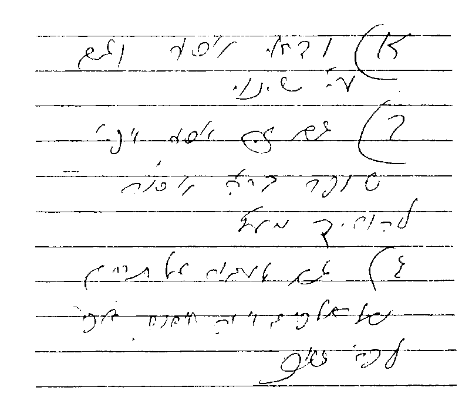

לכבוד
הגאון הגדול, מעוז ומגדול, סיני ועוקר הרים וטוחנן זב"ז
הג"ר שלמה זלמן אויערבאך שליט"א,
ראש ישיבת "קול תורה" פעיה"ק ירושת"ו.
כיון שעוסק אני בס"ד בכתיבת הלכות פורים, רציתי לשאול את כת"ר שליט"א, האם הא דקיי"ל שלא גזרו על שבות בביה"ש משום מצוה דרבנן, וכ"ש משום מצוה שהיא מדברי קבלה, כקריאת המגילה (וכמש"כ המש"ז תרצ"ב סק"ג, וכה"ח סקל"ג), האם נכון שיהיה אסור לטלטל את המגילה ברה"ר בביה"ש (דהוי ספק איסור דאו') לצורך הקריאה בה בביה"ש של כניסת שבת (בלא ברכה), אם לא קרא את המגילה בפורים כשחל בערב שבת. ומה יהיה הדין אם יטלטלנה במקרה זה בשינוי.
ועוד אשאל את כת"ר שליט"א, בענין חיילים הנמצאים בשבת "זכור" בבסיס או במוצב, ואין במקום אלא פחות מעשרה יהודים. האם רשאים חלק מהחיילים ללכת בשבת לישוב סמוך (באופן שאין הדבר פוגע כלל בפעילותם הביטחונית) ולקחת עמם את נשקם (אם ההוראות הצבאיות מחייבות נשיאת נשק בכל יציאה מהבסיס), כדי לשמוע את קריאת התורה בפר' "זכור", אף במקום שאין עירוב.
ואם כן, האם רשאים לשם כך ללכת עד תחום של אלפיים אמה, או שלצורך מצוה זו (שלדעת כמה פוס' קריאת התורה של פר' "זכור" דוקא בשבת זו הינה מדאו'), רשאים ללכת אף עד תחום של י"ב מיל. והאם ניתן להקל בדברים אלה אף לצורך שמיעת קריאת התורה של פר' "פרה" (שי"א שגם היא מדאו'), או אף לשם התפילות בכל שבתות השנה.
אודה לכת"ר שליט"א אם יואיל להקדיש לי מזמנו היקר ולענות על שאלותי, כיון שמעונין אני לפרסם דעתו, ואין שמחה כהתרת הספקות.
בברכת התורה
משה הררי
ישיבת מרכז הרב
ירושלים תובב"א
וזו תשובתו אלי:

א ודאי אסור וגם ע"י שינוי.
ב גם זה אסור. אפי' שופר בר"ה אסור להוריד מעץ.
ג גם לעבור על תחום של אלפים אמה אסור, אפי' לפר' זכור.